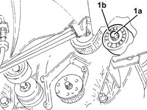
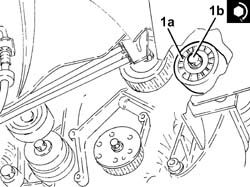
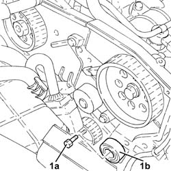
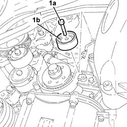

1032C30 FIXED TIMING SYSTEM TENSIONER - R + R WITH TIMING BELT REMOVED
- Path
- Procedures > 10 ENGINE UNIT > 1032 TIMING SYSTEM > 1032C TIMING SYSTEM TENSIONERS > 1032C30 FIXED TIMING SYSTEM TENSIONER - R + R WITH TIMING BELT REMOVED
- Kind
- repair procedure (removal / refitting; the operation number is the code)
- Applies to
- engines: 1.8 T.SPARK, 2.0 JTS, 1.9 JTD 16V; all production periods
- Interactive page
- https://sloeber94.github.io/elrnDB-aGt/en/#/125000972
Applies to: engines: 2.0 JTS; all production periods
 Removing
Removing
 Refitting
Refitting1. Undo the bolt (1a) and remove the fixed timing belt tensioner (1b).

Applies to: engines: 2.0 JTS; all production periods
Refitting
Removing1. Place the timing fixed tensioner (1a) back in its housing and secure it by tightening the bolt (1b) to the recommended torque.
 | Fastening | Component | Ø | Value (daNm) |
|---|---|---|---|---|
1b | Bolt | FIXED TENSIONER | M8 | 2.3 ÷ 2.8 |

Applies to: engines: 1.9 JTD 16V; all production periods
Removing
RefittingProceed with removal
- 1016A10 sound-proofing cover - r + r
1. Undo the bolt (1a) and remove the fixed timing belt tensioner (1b).

Applies to: engines: 1.9 JTD 16V; all production periods
Refitting
RemovingFit the fixed timing belt tensioner and secure by tightening the bolt to the recommended torque.
| Fastening | Component | Ø | Value (daNm) |
|---|---|---|---|---|
- | Bolt | FIXED TENSIONER | M10 | 4.5 ÷ 5.5 |
Proceed with refitting
- 1016A10 sound-proofing cover - r + r
.
Applies to: engines: 1.8 T.SPARK; all production periods
Removing
Refitting1. Undo the bolt (1a) and remove the fixed timing belt tensioner (1b).

Applies to: engines: 1.8 T.SPARK; all production periods
Refitting
RemovingFit the fixed timing belt tensioner and secure by tightening the bolt to the recommended torque.
Fastening | Component | Ø | Value (daNm) | |
|---|---|---|---|---|
- | Bolt | FIXED TENSIONER | M8 | 2.3 ÷ 2.8 |